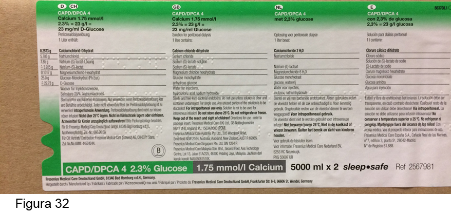
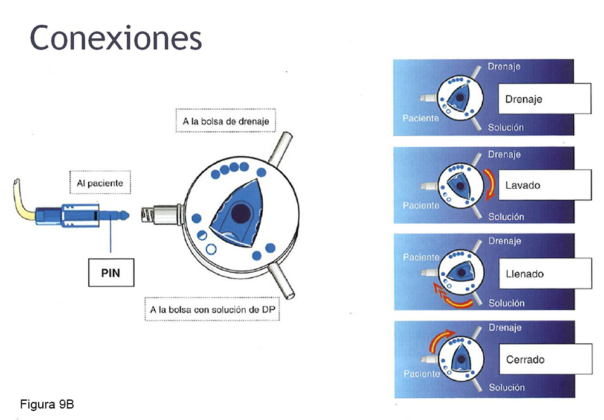
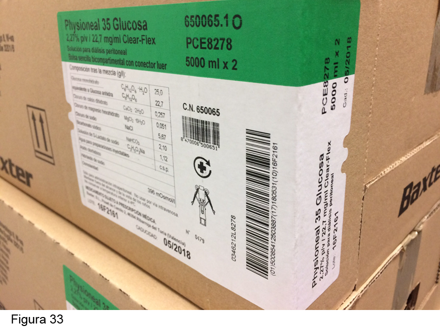
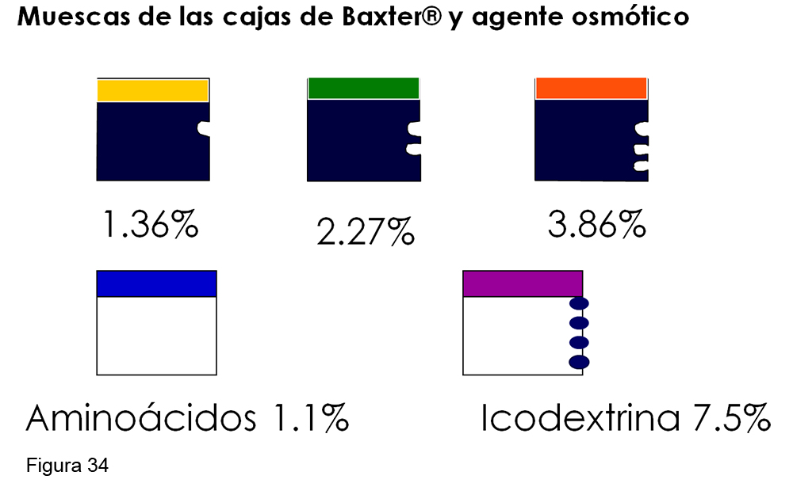
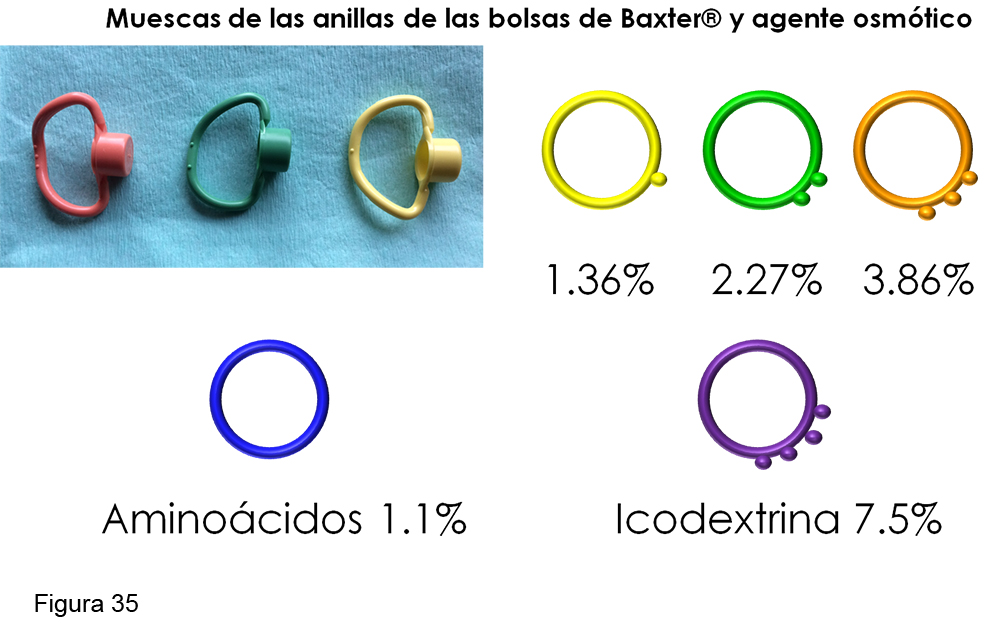
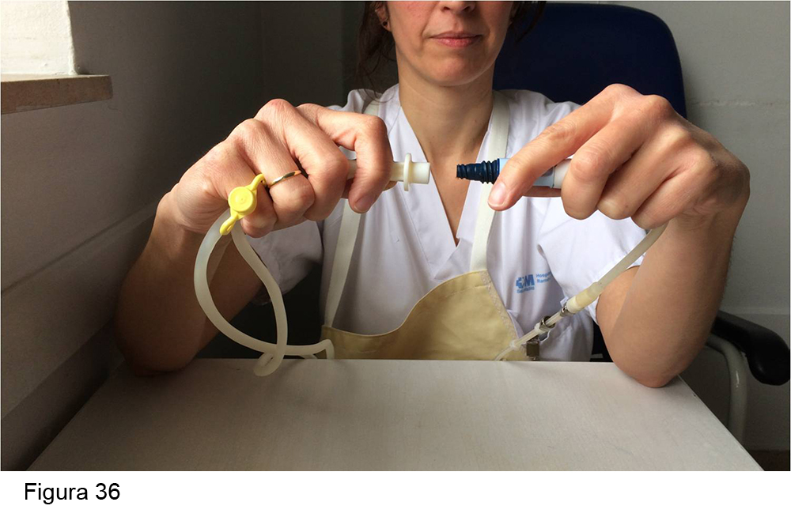
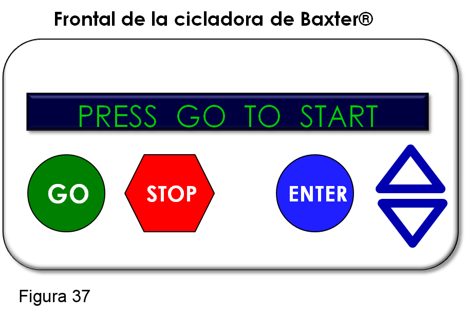
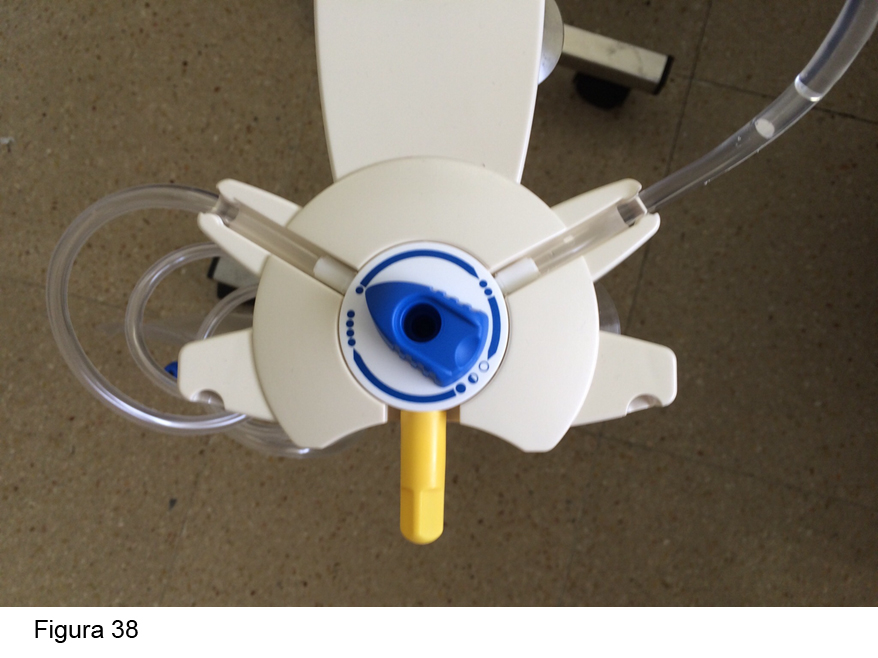

<div class="pages">
  <div data-page="projects" class="page no-toolbar no-navbar">
    <div class="page-content">
    
     <div class="navbarpages">
       <div class="navbar_home_link"><a href="toogle.html"></a></div>
       <div class="navbar_page_center"><b>Especialidades</b></div>
       <div class="menu_open_icon_white"><a href="#" class="open-panel"></a></div>
     </div>
     <div id="pages_maincontent">

          <h2 class="page_subtitle">Diálisis Peritoneal - DP en situaciones especiales </h2>
          <p><b>Autor/a:</b> Maite Rivera (Pancreatitis, hepatopatía crónica, VIH, anúricos, laboralmente activos, con animales, paliativos y SD cardiorrenal), Haridian Sosa (Poliquistosis Renal), Saúl Pampa (Vuelta del trasplante renal), Cristina Campillo y Yael Coronas (Discapacitados), Victor Burguera (Paliativos) - Hospital Ramón y Cajal, Madrid</p>
          <div class="page_single">         
              <div class="buttons-row">
                    <a href="#tab3" class="tab-link active button">Pancreatitis</a>
                    <a href="#tab4" class="tab-link button">Hepatopatía Crónica</a>
                    <a href="#tab5" class="tab-link button">Poliquistosis Renal</a>
                    <a href="#tab6" class="tab-link button">VIH</a>
                    <a href="#tab7" class="tab-link button">Vuelta del trasplante renal</a>
              </div>
              <br />
              <div class="buttons-row">
                    <a href="#tab8" class="tab-link button">Anúricos</a>
                    <a href="#tab9" class="tab-link button">Laboralmente Activos</a>
                    <a href="#tab10" class="tab-link button">Discapacitados</a>
                    <a href="#tab11" class="tab-link button">Con animales</a>
                    <a href="#tab12" class="tab-link button">Paliativos</a>
                    <a href="#tab13" class="tab-link button">SD Cardiorrenal</a>
              </div>
              
              <div class="tabs-simple">
                    <div class="tabs">
                        <div id="tab3" class="tab active">
                              <br />
                              <h4>Pancreatitis</h4>
                              <p class="nojustify">
                                  La pancreatitis es más frecuente en pacientes en diálisis (HD y DP) que en población general. Se presenta con cuadro similar a peritonitis, con dolor abdominal y efluente turbio pero con cultivo estéril. Puede haber hemo o quiloperitoneo. A veces hay peritonitis asociada, por lo que siempre ha de cultivarse el efluente. Es imprescindible medir niveles de lipasa en sangre, ya que los niveles plasmáticos de amilasa están muy disminuidos en pacientes que están o han estado (semanas previas) con icodextrina.  Mantener al paciente en DP o transferirlo a HD no influye en el pronóstico.
                              </p> 
                      </div>
                      <div id="tab4" class="tab">
                              <br />
                              <h4>Hepatopatía Crónica</h4>
                              <p class="justify">
                              	No hay estudios que demuestren la superioridad de una técnica dialítica sobre otra en estos pacientes. En general, los pacientes hepatópatas, sobre todo en estado avanzado, toleran mal la HD, presentando más episodios de hipotensión, lo que puede precipitar episodios de encefalopatía hepática. Además, la coagulopatía del cirrótico obliga a ser muy meticulosos en la dosis y tipo de anticoagulación que se prescribe en la HD. Por todo lo anterior, la DP ofrece ventajas sobre la HD (1).<br /><br />

                                <b>Ventajas</b><br />                                 
                                -	No produce intolerancia hemodinámica<br />
                                -	No necesita anticoagulación<br />
                                -	Aporta glucosa a un paciente desnutrido<br /> 
                                -	Permite la evacuación permanente de la ascitis<br />
                                -	Evita la transmisión nosocomial de virus hepatotropos en las unidades de HD (técnica domiciliaria)<br /><br />
                                
                                <b>Desventajas</b><br />                                 
                                -	Dificultad de la realización en paciente con pérdida de la destreza manual (encefalopatía, hiponatremia, flapping, etc.),<br />
                                -	Mayor probabilidad teórica de peritonitis bacteriana<br />
                                -	Empeoramiento del estado nutricional por las elevadas pérdidas proteicas en el dializado<br />
                                -	En el efluente peritoneal se han encontrado partículas víricas (virus B y C). Hemos de instruir al paciente en un manejo adecuado del drenado peritoneal en domicilio.<br /><br />
                                
                                <b>Precauciones</b><br />                                 
                                -	Iniciar la DP  tras 1 mes de colocación del catéter (evita fugas)<br />
                                -	Si es necesario iniciar la DP antes de un mes, se debe comenzar con volúmenes bajos y en decúbito, realizando una “paracentesis controlada”, que consiste en que el volumen de drenado sea 400-500 ml más de lo infundido, con lo que se consigue una lenta disminución de la ascitis.<br />
                                -	Es recomendable mantener inicialmente “día seco” para disminuir las posibilidades de fuga precoz.<br />
                                -	Tras el período de maduración del catéter (1 mes) puede prescribirse técnica manual o automática.<br />
                                -	Las bolsas de glucosa son suficientes para mantener una UF adecuada.<br />
                                -	Considerar la administración de profilaxis de peritonitis bacteriana espontánea.<br />
                                -	Usar los antibióticos tópicos para el cuidado del orificio de salida del catéter.<br />
                                -	Uso de lactulosa (previene estreñimiento y encefalopatía).<br />
                                -	Controlar regularmente los parámetros de nutrición.<br />
                                -	Mantener un nivel normal de potasio en sangre.<br />
                                -	En desnutridos, proporcionar apoyo nutricional. Usar con precaución suplementos ricos en proteínas si hay riesgo de encefalopatía.<br />
                                -	Vacunar contra el neumococo.<br /><br />
                                
                                <b>Implantación del catéter peritoneal en cirróticos</b><br />                                
                                Se hará con la técnica habitual de cada centro. En el momento de la implantación, aprovechar para realizar una paracentesis de gran volumen y así disminuir la posibilidad de una fuga pericatéter; administrar albúmina IV para evitar la hipovolemia efectiva. En los días sucesivos, según la cantidad de ascitis que genere el paciente, habrá que realizar nuevas paracentesis a través del catéter de DP, que se acompañarán de albúmina (8 g por litro extraído)&sup1;.<br /><br />
                                
                                <i>1. M. Rivera et al. Diálisis en el paciente con hepatopatía crónica. Nefrología Suplemento Extraordinario 2013;4:16-21.</i>

                              </p>
                      </div> 
                      <div id="tab5" class="tab">
                              <br />
                              <h4>Poliquistosis Renal</h4>
                              <p class="nojustify">
                                  Históricamente se ha considerado que la DP no era una técnica factible en estos pacientes debido al aumento de volumen hepático/renal, con disminución del espacio abdominal, la superficie peritoneal efectiva, el aumento de presión intraabdominal y las consiguientes complicaciones asociadas: hidrotórax, fugas, hernias abdominales...<br />
Diversos estudios&sup1-&sup3; han demostrado que la poliquistosis no es una contraindicación inicial para empezar DP como terapia renal sustitutiva: comparando pacientes con ERCT de otro origen, presentan similar supervivencia de paciente y técnica, sin diferencias estadísticamente significativas en la incidencia de complicaciones, tanto infecciosas como mecánicas.<br />
								Al incluir en DP a un paciente, hay que considerar:<br /><br />

                                <b>&bull;&nbsp;</b> Que hasta un 45% presentan hernias de pared abdominal:
                             </p>
                             
                             <blockquote class="sin">                                
                                - Evaluación exhaustiva del estado de la pared abdominal/columna: hernias/defectos de pared preexistentes, hernias de disco. <br />
                                - Fortalecer la musculatura troncular en la medida de lo posible (tanto lumbar como prensa abdominal). <br />
                                - En caso de ser necesario, repararlos antes de iniciar la DP. Aprovechar la intervención de colocación del catéter. <br />
                                - Estos defectos nos decantarán hacia la DPA frente a la DPCA. Valorar tipo de técnica según estilo de vida y sintomatología del paciente: DPCA con ajuste del volumen infundido en los intercambios y/o DPA con día seco o bajos volúmenes en la permanencia diurna.
                             </blockquote>
                             
                             <p class="nojustify">  
                                <b>&bull;&nbsp;</b> Entre un 50-83% presentan divertículos colónicos: 
                             </p>
                             
                             <blockquote class="sin">
                                - Regularizar hábito intestinal (evitar estreñimiento). <br />
                                - Hay que tener en cuenta este hecho ante un episodio de peritonitis (posible perforación, diverticulitis, etc.).
                             </blockquote>
                             
                             <p class="nojustify">    
                                <b>&bull;&nbsp;</b> Mayor frecuencia de hidrotórax: 
                             </p>
                             <blockquote class="sin">   
                                - Vigilar posibles fugas/hidrotórax tras inicio de técnica.
                             </blockquote>
                             <p class="nojustify">    
                                <b>&bull;&nbsp;</b> Posibilidad de hemoperitoneo en caso de quiste complicado/rotura quística y método de actuación en dicho caso.<br /><br />
                                <b>&bull;&nbsp;</b> En caso de precisar nefrectomía por otras causas (infecciones quísticas recurrentes, etc.), puede suponer el paso  a HD.<br /><br />
                                
                                
                               <i> 1. Janeiro D et al. Peritoneal dialysis can be an option for dominant polycystic kidney disease: an observational study. Perit Dial Int 2015; 35(5): 530-536.<br />
                                2. Kumar S et al. Long term outcome of patients with APKD receiving peritoneal dialysis. Kidney Int 2008; 74(7):946-51.<br />
                                3. Xie XS et al. Peritoneal dialysis for autosomal dominant polycystic kidney disease: a retrospective study. J Zhejiang Univ Sci B. 2016; 17(5):375-81.</i>

                              </p>
                      </div> 
                      <div id="tab6" class="tab">
                              <br />
                              <h4>VIH</h4>
                              <p class="justify">
                                  Los pacientes VIH(+) pueden ser tratados tanto con HD como DP, no habiendo claras diferencias en supervivencia, describiéndose hasta 9 años en DP. El manejo de los retrovirales no ofrece mayor problema si se conoce la farmacocinética de la mayoría de los retrovirales y su escasa eliminación por peritoneo. En líquido peritoneal se han aislado partículas virales, por lo que el paciente ha de ser instruido en el desecho adecuado de los líquidos de drenaje en el domicilio&sup1;-&sup3;.<br /><br />

                                <b>Ventajas de la DP</b><br />                                 
                                - Aporte calórico en pacientes desnutridos<br />
                                - Menor riesgo de contagio para otros pacientes y personal sanitario<br />
                                - No necesidad de aislamiento (coinfección frecuente con VHC)<br />
                                - Mayor autonomía e independencia (pacientes jóvenes)<br /><br />
                                
                                
                                <b>Desventajas de la DP</b> <br />                                
                                - Se ha especulado con un mayor riesgo teórico de peritonitis por pseudomonas, cándida o micobacterias (no refrendado por la literatura).<br />
                                - Empeoramiento de la nutrición (pérdida proteica en el dializado).<br />
                                - Dificultad de conseguir un acceso vascular en drogodependientes por vía parenteral.<br /><br />
                                
                                <i>1. M Rivera et al. Evolución de los pacientes infectados por el VIH en diálisis peritoneal: experiencia de un centro y revisión de la literatura. Nefrologia 2008;28:505-10	<br />
                                2. Trullas JC et al. Outcome and prognostic factors in HIV-1-infected patients on dialysis in the cART era: A GESIDA/SEN cohort study. J Acquir Immune Defic Syndr. 2011;57(4):276–83<br />
                                3.Saracho R et al Evolución clínica de los enfermos renales crónicos en tratamiento sustitutivo con infección por VIH. Nefrología 2015;35(5):457–464.</i>

                              </p>
                      </div> 
                   <div id="tab7" class="tab">
                              <br />
                              <h4>Vuelta del trasplante renal</h4>
                              <p class="justify">
                                  La modalidad de diálisis de elección tras la pérdida del trasplante renal (TR) es aún controvertida, no encontrándose diferencias significativas en favor de ninguna de las dos técnicas. Sin embargo, la realidad es que la mayoría de los pacientes empiezan en HD. Su situación clínica es similar a la de los pacientes con ERC de riñones nativos, con excepción de la anemia -más grave en los no trasplantados- y en la función renal residual (FRR) - menor en los transplantados-&sup1;,&sup2;.<br />
                                    Al comparar los pacientes que inician DP y provienen de un TR con los que inician DP de novo encontramos mayor pérdida de la FRR en los que provienen del TR. Puede ser conveniente mantener inicialmente la inmunosupresión, para evitar un declive rápido de la FRR (evidencia C),  pero no hay datos que avalen que deba mantenerse durante > 6 meses. Se ha sugerido que los pacientes que reinician DP tras el fracaso tardío de un injerto renal presentan una alta tasa de infecciones, así como una notable mortalidad cardiovascular y por peritonitis, lo que no ha sido ratificado por otros estudios3. En resumen, se puede considerar el reingreso en DP en aquellos pacientes que lo deseen, siempre que no hayan sufrido complicaciones abdominales graves y siendo probablemente recomendable el mantenimiento de la inmunosupresión hasta el cese de la función del injerto para mantener la FRR.<br />
                                    La mayoría de los autores coincide en afirmar que la supervivencia del paciente y del injerto tras el TR es similar en pacientes procedentes de DP o HD. Es más, algunos incluso sugieren que los pacientes en DP tienen menor tasa de necrosis tubular aguda y mejor supervivencia del injerto a largo plazo<br /><br />
                                    
                                    <i>1.	Caldés S, Marcén R, Amezquita Y, Fernández M, Rivera M, Galeano  C, Fernández, A, Teruel JL, Quereda C. Dialysis after kidney transplant failure: do patients start in a worse condition than the general population with chronic kidney disease? Nefrologia. 2011;31(1):51-7. <br />
                                    2. Portolés J, Moreno F, López-Sánchez P, Mancha J, Gómez M, Corchete E, Del Peso G, Bajo MA, Llópez-Carratalá R, Fernández-Perpén  A; Grupo Centro Diálisis Peritoneal-GCDP, REDinREN.  Peritoneal   dialysis  and  kidney  transplant. A two-way ticket in an integrated renal replacement therapy model. Nefrologia. 2011;31(4):441-8.<br />
                                    3. Marcén R, Teruel Briones JL. Patients with a failed renal transplant. Minerva Urol Nefrol. 2011;63(1):35-44.</i><br /><br />                                    
                                    
                                    <b>Retirada del catéter peritoneal tras TR</b><br />
                                    En el caso de los pacientes que provienen de DP se debe plantear cuál es el momento más adecuado para retirar el catéter peritoneal. No se ha establecido el plazo apropiado para la retirada del catéter. La retirada precoz (incluso durante el acto quirúrgico del TR) ha sido especialmente alentada para disminuir el riesgo de complicaciones infecciosas asociadas al catéter, sin embargo, ante la posibilidad de disfunción retrasada del injerto o incluso fracaso precoz del mismo, otros grupos plantean mantener el catéter peritoneal debido al bajo número de complicaciones que se observa, cuando haya una garantía razonable de la viabilidad del injerto (2-2 meses.  En caso de necesitar diálisis, no se recomienda utilizar la DP, sino la HD, ante el eventual desplazamiento del injerto y torsión del pedículo vascular al llenar el abdomen de líquido.<br /><br />
                                    
                                    <i>1. Guias de práctica clínica en diálisis peritoneal. Sociedad Española de Nefrología, 2005.</i>

                              </p>
                      </div> 
                      <div id="tab8" class="tab">
                              <br />
                              <h4>Anúricos</h4>
                              <p class="justify">
                              	En los anúricos es difícil alcanzar los objetivos de adecuación (Kt/V semanal de urea > 1,7,  ClCr > 60 l/sem/1,73 m2 y UF > 1.000 ml/24 h). Dado que la DP complementa a la FRR, al no existir esta, la dosis de diálisis que ha de prescribirse a estos pacientes ha de ser más elevada que a los pacientes con FRR. Esto se consigue más fácilmente con DPA que con DPCA, sobre todo si el paciente es corpulento (talla > 1,80 o peso > 80 kg o SC > 2 m2). La DPA extrae menos sodio que la DPCA, por lo que los pacientes anúricos deben tomar una dieta estricta baja en sal para evitar la sobrecarga de volumen.  <br />
Una adecuada dosis de diálisis se consigue incrementando el volumen total de diálisis prescrito, lo que se consigue 1-2 intercambios de DP (DP-plus) durante el día. Una pauta adecuada de DPA y de intercambios diurnos requieren el conocimiento de la dinámica peritoneal mediante el PET.<br />
Hay que incrementar la dosis de diálisis progresivamente. La extracción de volumen ha de ser al menos de 1 l/día, ya que la sobrecarga de volumen condiciona negativamente la supervivencia.
                              </p>
                      </div> 
                    <div id="tab9" class="tab">
                        <br />
                        <h4>Laboralmente activos</h4>
                        <p class="justify">
                            La repercusión sobre el puesto de trabajo en pacientes en diálisis ha sido poco estudiada&sup1;,&sup2;, sin embargo, es fácil  suponer que los pacientes en diálisis tienen dificultades para mantener su puesto de trabajo, derivadas de su estado físico y de las incompatibilidades horarias por el tratamiento. Los beneficios de mantener el puesto de trabajo para las personas enfermas son obvios: tienen mayor autoestima, se sienten menos deprimidas, están más socializadas, mantienen su solvencia económica e incluso se ha descrito mayor adherencia al tratamiento médico.<br /><br />
                            Aproximadamente un tercio de la población activa que recibe tratamiento renal sustitutivo mantiene su puesto de trabajo, siendo la edad (25-54 años), el sexo (hombres > mujeres), el tiempo medio en tratamiento sustitutivo (4,8 vs 7,9 años) y la modalidad de tratamiento los factores que condicionan esta situación. Alrededor de un 20% de los pacientes en HD trabajan, mientras que en DP lo hacen un 30%  (un 48% si la modalidad es DPA) y un 40% en trasplante. Es más, de los pacientes en diálisis que mantienen su trabajo, el 63% están en DP. En resumen, los pacientes en DP tienen tres veces más probabilidades de mantener su puesto de trabajo que los de HD. Las ventajas en lo que respecta a la HD en cuestión laboral son:<br /><br />
                            
                            - Técnica domiciliaria<br />
                            - No desplazamiento al hospital<br />
                            - Mayor versatilidad de la DP (ajuste a los horarios laborales, DPA...) <br />
                            - No síndrome postdiálisis<br />
                            - Menor tasa de ingresos<br /><br />
                            
                            <i>1. Julián  Mauro JC et al. La situación laboral del paciente con enfermedad renal crónica en función del tratamiento sustitutivo renal. Nefrologia 2012;32:439-45<br />
                            2. Helanterä I. Employment of patients receiving maintenance dialysis and after kidney transplant: a cross-sectional study from Finland. Am J Kidney Dis. 2012;59(5):700-6.</i>

                        </p>
	                </div> 
                    <div id="tab10" class="tab">
                        <br />
                        <h4>Discapacitados</h4>
                        <p class="justify">
                            Los pacientes con discapacidad suelen ser dependientes de un cuidador principal (CP). El CP puede ser un familiar (cónyuge, hijos) o una persona remunerada formada en la Unidad de DP, cualificado (enfermera o auxiliar) o no. La DP realizada con ayuda de un cuidador se denomina <b>DP asistida</b>. Para no sobrecargar al CP, se prefiere la DPA sobre la DPCA, ya el número de conexiones diarias es menor.<br /><br />

                            <i><b>Pacientes con déficit visual</b></i><br />
                            
                            La inclusión de un paciente con déficit visual en DP dependerá de su autonomía y de la disponibilidad de un CP. Su entrenamiento será individualizado, acorde a sus necesidades y a las de su núcleo sociofamiliar. Lo ideal es contar con un CP que participe de manera activa, encargándose del intercambio y de los cuidados derivados de la técnica, o bien de manera colaborativa, supervisando la fecha de caducidad de las bolsas almacenadas, su colocación según antigüedad, control del material, realizando y/ o supervisando los cuidados del orificio de salida, aspecto del drenaje peritoneal, valorando los posibles cambios en el aspecto de orificio y drenaje. <br /><br />
                            En ocasiones, se dispone del apoyo de varios cuidadores (cónyuge e hijos). En este caso, es muy importante designar a un CP para organizar y supervisar de manera eficiente los cuidados. El resto de cuidadores apoyarán al CP. El CP es aquel que va a pasar más horas con el paciente y/o esté más motivado en colaborar en su cuidado. <br /><br />
                            Los invidentes tienen el sentido del tacto y del oído más desarrollado, lo que les va a ayudar en la realización del intercambio. Para el entrenamiento, el paciente invidente memorizará y seguirá un orden y un método estrictos. Es imprescindible que realice la preparación de todos los utensilios que va a necesitar durante el intercambio, para evitar interrupciones y el riesgo de infecciones al dejar el material expuesto. Dedicar buena parte del entrenamiento a que el paciente se familiarice con todo el material necesario para realizar la diálisis. A través de la percepción táctil identificará texturas, formas, tamaños, longitudes, temperatura y peso de su prolongador y del resto del material (bolsas, pinzas, disco, tapones). Se le enseñará: cómo sujetar su prolongador y las líneas de las bolsas y hasta donde es seguro colocar los dedos, cómo comprobar la temperatura y la integridad de las bolsas, a conectarse y desconectarse, etc..<br /><br />
                            El paciente deberá desarrollar una serie de habilidades manipulativas como son enroscar/ desenroscar, abrir/ cerrar, pinzar/ despinzar, encajar/ desencajar, girar el disco (Fresenius®) en el sentido de las agujas del reloj y ensartar/ desensartar.<br /><br />
                            El paciente deberá tener el lugar donde va a realizar la DP perfectamente localizado, así como todo el material necesario para ello. Las bolsas de DP deberán colocarse de derecha a izquierda, según la concentración de glucosa (1,36/ 1,5%, 2,27/ 2,3% y Extraneal®) para facilitar al paciente la tarea de coger la bolsa que le corresponde en cada momento.<br /><br />
                            Para algunos pacientes es muy útil realizar una grabación de voz con instrucciones claras y sencillas. En caso necesario, el paciente puede acudir a la O.N.C.E. para que le pasen a un medio auditivo o bien a Braille las instrucciones del intercambio. <br /><br />
                            Las casas comerciales cuentan con las siguientes ayudas para el paciente con déficit visual: <br /><br />
                            
                            
                            <b>FRESENIUSI®</b><br />
                            
                            1. <u>Etiquetado de las cajas</u>. La concentración de glucosa se identifica con pestañas palpables en el borde del etiquetado (1 pestaña, 1,5%; 2 pestañas, 2,3%; 3 pestañas, 4,5%) (Figura 32)<br /><br /><br />. Para el resto de los identificadores será imprescindible la ayuda de un cuidador, ya que, salvo la concentración de glucosa (pestañas), el resto de iconos solo serán perceptibles a través de la visión.<br /><br />
                            
                            -	La concentración de calcio se señala mediante una franja de color gris, oscuro para el 1,75% y claro para el 1,25%.<br />
                            -	Dibujo de un disco en el caso de las bolsas manuales y una cicladora en la automatizada.<br /><br />
                            
                            2. <u>Manejo del disco y organizador.</u> <br />
                            
                            •	Durante el entrenamiento se enseñará al paciente a manejar el disco despacio, ya que se nota un clic cuando se avanza (Figura 9B).<br /><br /><br /> En el caso de la infusión, se nota 1 clic para cada velocidad. Además, se enseñará a colocar el organizador a una altura adecuada a cada paciente. Pondrá la mano no dominante encima del organizador y del disco para sujetarlo y orientarse. El dedo pulgar se colocará a la altura de la conexión del disco. Quitará el tapón del disco, lo tirará al suelo (para que no le estorbe y no pierda tiempo) y se conectará. Puede ser de utilidad colocar unas gotas de pegamento sobre los puntos del disco para poder palparlas y orientarse mejor. <br /><br />
                            •	Como va a palpar el disco en numerosas ocasiones durante el intercambio, junto a  las medidas habituales de higiene de manos (lavado con agua y jabón y aplicación de Sterillium®), la casa comercial aconseja pulverizar con Frekaderm® cada vez que vaya a tocar el disco. Es muy importante dejar secar tanto el Frekaderm® como el Sterillium® para que ejerzan su acción.<br /><br />
                            
                            3. <u>Cicladora.</u> La casa comercial le proporciona al paciente una pantalla de metacrilato para la cicladora, con orificios en los iconos de alarma y de avanzar. Esta se superpone sobre la pantalla, facilitando el acceso a los iconos que necesitará pulsar el paciente durante el tratamiento. El paciente ciego necesitará ayuda para el montaje de la cicladora.<br /><br />
                            
                            
                            <b>BAXTER®</b><br />
                            
                            1. <u>Etiquetado de las cajas</u>. La concentración de glucosa se identifica con muescas palpables en el borde del etiquetado (1 muesca, 1,36%; 2 muescas, 2,27%; 3 muescas, 3.86%; 4 muescas, Extraneal®; sin muescas, Nutrineal®) (Figura 33)<br /><br /><br /> (Figura 34)<br /><br /><br />. Además, en las anillas de las bolsas hay un código Braille para reconocer las diferentes concentraciones de glucosa en las bolsas. (Figura 35)<br /><br />
                            
                            2. <u>Manejo de la conexión</u>. La conexión del prolongador y la bolsa debe hacerse con los codos apoyados sobre una mesa para que pueda aproximar ambas manos sin cometer errores (Figura 36)<br /><br />
                            
                            3. <u>Cicladora</u>. En el panel frontal de la máquina se encuentran los botones de mando, que tienen formas geométricas para poder distinguirlas al tacto (Figura 37).<br /><br /><br /> La cicladora, además, cuenta con diversas alarmas auditivas (pinzamiento de líneas, bajo drenaje, etc).<br /><br />
                            
                            
                            <u>Pacientes con déficit auditivo</u><br />
                            
                            Los pacientes con déficit auditivo tienen menos inconvenientes durante el entrenamiento. Además del código de colores identificativo de la solución osmótica tanto para la técnica manual y automática, cuentan con un zumbador/vibrador que avisa de las alarmas de la cicladora en la casa Fresenius®. Este consta de dos aparatos, uno se coloca encima de la cicladora y el otro debajo de la almohada del paciente. Cuando la cicladora da una alarma, vibra y avisa al paciente. Las cicladoras de ambas casas reproducen texto en su frontal con información del tratamiento.<br /><br />
                            
                            
                            <u>Pacientes con déficit motor</u><br />
                            
                            Los pacientes con hemiplejia, enfermedad de Parkinson, temblor senil... tienen dificultades para la conexión del sistema Baxter®. En estos pacientes es más fácil que aprendan a realizar sin dificultades a manejar el disco distribuidor de Fresenius® (Figura 38)<br /><br />
                            
                            
                            <u>Pacientes ancianos</u><br />
                            
                            Los ancianos suelen tener visión disminuida (cataratas), pérdida de audición y pérdida de destreza manual. A menudo son dependientes de un cuidador, por lo que se prescribirá DPA. Todo lo referido anteriormente es válido en esta población. 

                        </p>
	                </div> 
                    <div id="tab11" class="tab">
                        <br />
                        <h4>Con animales</h4>
                        <p class="justify">
                            La peritonitis por bacterias propias del reino animal (zoonosis) es una complicación poco frecuente en DP y representa el 0,03-0,54% de los episodios. Se han aislado unos 15 microorganismos diferentes de origen animal. <br /><br />
                            La bacteria más reportada es <i>Pasteurella multocida</i>, un aerobio Gram(-) transmitido principalmente por gatos. Se encuentra en la cavidad oral de muchos mamíferos, incluyendo gatos (70-90%) y perros (66%). La <i>Pasteurella</i> es una causa poco común de peritonitis en DP, habiéndose publicado hasta la fecha solo 23 casos.  En todos excepto en  uno,  se debió a que el gato estaban en contacto con el material de DP, llegando  incluso  a dañar las bolsas o sus líneas  por rasguños o mordeduras. Otros gérmenes responsables de peritonitis por zoonosis son del género <i>Brucella</i> en pacientes en contacto con ovejas o vacas, <i>Bordetella</i> (perros), <i>Zygomyces</i> (cacatúas) o S. <i>lentus</i> (caballos).<br /><br />
                            La importancia de conocer este tipo de peritonitis radica en que la sensibilidad a los antibióticos y la tasa de crecimiento de los cultivos son muy diferentes en las bacterias de los animales con respecto a las comunes, con el consiguiente retraso en un tratamiento adecuado, alta probabilidad de retirada del catéter (27%) y elevada mortalidad (13,5%). <br /><br />
                            La zoonosis en DP plantea dudas sobre la conveniencia de que los pacientes con DP tengan mascotas o que entren en contacto con animales de granja. Actualmente existe bastante consenso en no prohibir el uso de mascotas (es bien conocido el efecto beneficioso de estos animales) ni el contacto con animales de granja, pero sí hacer hincapié en las medidas de higiene durante la realización del intercambio de DP, especialmente en el lavado de manos y en guardar el material de diálisis lejos de los animales. Por último, se ha de hacer entender al paciente que el material de DP en ningún caso puede ser un juguete  para su mascota y puede ser peligroso para su salud.
                        </p>
	                </div> 
                    <div id="tab12" class="tab">
                        <br />
                        <h4>Paliativos</h4>
                        <p class="nojustify">
                            Los pacientes en DP en situación vital terminal, como consecuencia de una patología que amenaza su vida a corto plazo, presentan capacidades funcionales disminuidas y serias dificultades para realizarse los intercambios peritoneales o asistir a las revisiones habituales en el hospital. En estas circunstancias, los pacientes de DP suelen ser transferidos a HD. Sin embargo, algunos que habían optado por la DP para mantener su independencia personal, al ser conscientes de su situación terminal, expresan su deseo de fallecer en domicilio y permanecer en DP hasta el final. Con un programa de atención domiciliaria para pacientes en DP en situación terminal, manejados en colaboración con su médico de atención primaria pueden ser mantenidos en DP hasta su fallecimiento.<br /><br />
                            
                            Las modalidades de diálisis que se plantean son:<br />
                            • <u>DP asistida</u>: cicladora nocturna y día seco (DPIN), implica que el cuidador reciba entrenamiento en DPA.<br />
                            • <u>DP paliativa</u>: pauta de DP que mantiene al paciente libre de síntomas (disnea) y le hace sentirse cuidado (dializado) hasta el final, sin suponer una carga excesiva para el cuidador. No se persiguen criterios de adecuación. Consiste en DPCA con 1-2 intercambios de glucosa cada 24 h. Si el control de la volemia es prioritario, un intercambio largo diurno de icodextrina combinado con un intercambio de glucosa nocturno podría ser suficiente.<br /><br />
                            
                            <i>Rivera Gorrín M, Teruel Brione JL, Burguera Vion V, Rexach L, Quereda C. Diálisis peritoneal paliativa: implantación de un programa de atención domiciliaria a enfermos tratados con diálisis peritoneal (DP) en situación terminal. Nefrologia 2015;35:146-9</i>
                        </p>
	                </div> 
                    <div id="tab13" class="tab">
                        <br />
                        <h4>SD Cardiorrenal</h4>
                        <p class="nojustify">
                            Los pacientes con insuficiencia cardiaca crónica, refractaria al tratamiento diurético y con frecuentes ingresos/reingresos pueden beneficiarse de la UF peritoneal, incluso sin insuficiencia renal. La DP en estos pacientes mejora la clase funcional y la fracción de eyección, disminuye la tasa de hospitalizaciones y mejora la calidad de vida. No está claro si aumenta la supervivencia. La DP + diuréticos es más coste-efectiva que el tratamiento diurético solo.<br /><br />
                            
                            Pautas:<br /> 
                            • 1 intercambio diario de icodextrina (UF estimada de 500-1000 ml) diarios o a días alternos<br />
                            • 2 intercambios diarios de glucosa<br />
                            • 2 intercambios  (glucosa + icodextrina)
                        </p>
	                </div> 
              </div>        
          </div>     
      </div>  
    </div>
  </div>
</div>